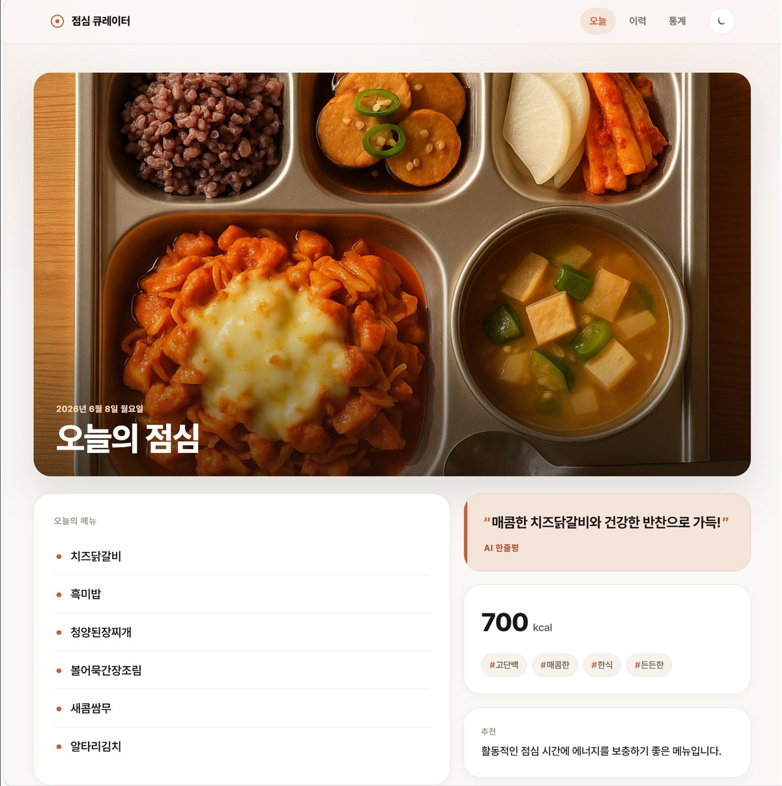
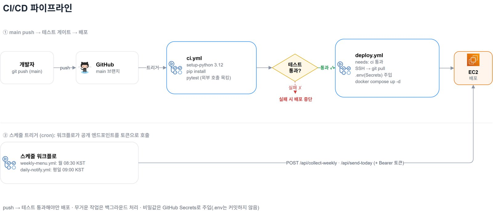
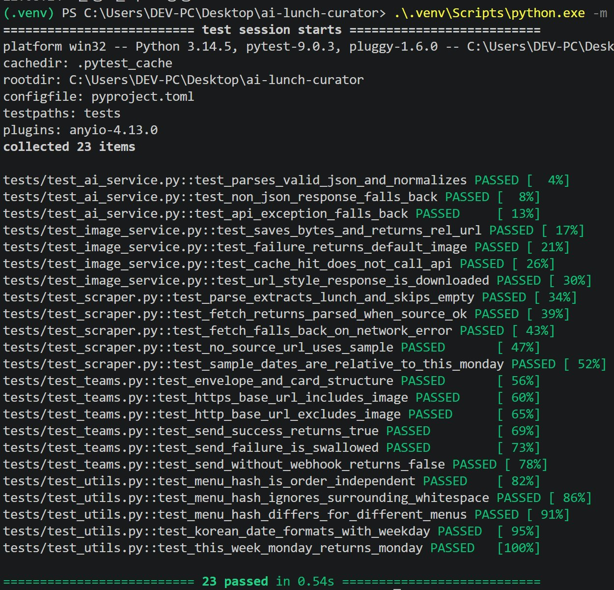
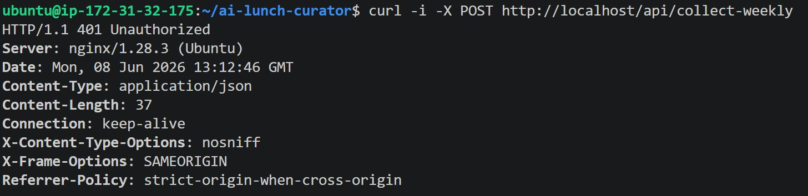
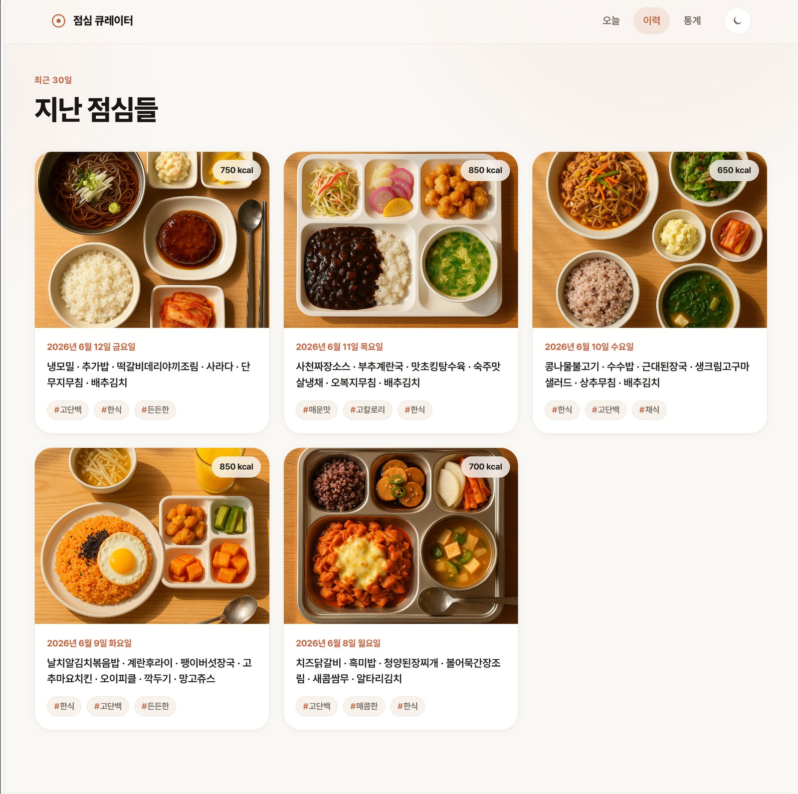

작업 04 / 10인프라 · 자동화2026
ai-lunch-curator
식단표 수집, Teams 알림, 배포를
GitHub Actions로 자동화했습니다


01개요
매주 식단표를 모으고, 평일 아침마다 점심 메뉴를 Teams로 보냅니다
매주 월요일 GitHub Actions가 학교 식단표를 모으고, AI가 메뉴를 정리해 DB에 쌓습니다. 평일 아침에는 그날 점심이 Teams로 옵니다. 웹에서는 오늘의 점심과 지난 점심, 자주 나온 메뉴를 볼 수 있습니다.
과제에서 요구한 건 GitHub Actions 스케줄, Python 크롤링, 웹훅으로 메뉴를 보내는 봇이었습니다. 저희는 여기에 AI 분석과 웹·DB를 붙이고, 테스트를 통과한 코드만 서버에 올라가는 배포까지 더했습니다.
09:00
평일 아침 Teams 알림
그날 점심을 카드 한 장으로 보냅니다.
23개
배포 전에 도는 테스트
하나라도 실패하면 배포하지 않습니다.
2개
밖으로 연 포트
SSH와 Nginx의 80번뿐이고, 앱과 DB는 안쪽에 두었습니다.
- 제가 맡은 일전체 구조 설계, FastAPI 웹과 Oracle DB, 대표 그림 생성, Docker·EC2·Nginx 배포, GitHub Actions CI/CD, 통합과 문서
- 팀원이 맡은 일메뉴를 받아 OpenAI로 한줄평·칼로리·태그·추천을 만드는 프롬프트, 식단표 크롤링과 Teams 웹훅 발송
02자동화 흐름
GitHub Actions가 시작하는 수집·발송·배포
앱 안에는 스케줄러를 두지 않았습니다. GitHub Actions가 정해진 시각에 토큰을 붙여 수집 주소와 발송 주소를 부르고, 코드가 올라오면 테스트를 거쳐 배포합니다.
과제가 끝난 뒤 EC2는 내려 두었습니다. 구조도 그림 크게 보기
03배포 · EC2 한 대와 Nginx
EC2 한 대와 Docker Compose, Nginx 구성
t3.small Ubuntu 서버에 docker compose로 앱과 Oracle XE를 올렸습니다. 앱의 8000번은 127.0.0.1에만 묶어 밖에서 직접 닿지 않게 하고, 앞에 둔 Nginx가 80번으로 받아 넘깁니다. 보안 그룹은 22번과 80번만 열어, 8000번이나 DB 포트 같은 안쪽 포트는 밖에서 보이지 않습니다.

- 메뉴를 요리 단위로 저장메뉴를 한 칸에 묶어 두지 않고 요리 하나씩
MENU_ITEM에 나눠 담아, 자주 나온 메뉴를GROUP BY로 바로 셀 수 있게 했습니다. - 날짜 기준 MERGE 저장날짜 기준 MERGE로 저장해, 같은 날을 다시 수집해도 중복 없이 갱신됩니다.
03-2배포 중 겪은 문제
첫 배포 때 생긴 문제 4건
문제와 조치4건 펼쳐 보기
- 메모리
t3.micro에서는 Oracle XE가 뜨지 않았습니다
메모리 1GB로는 모자라서 t3.small로 올리고 스왑을 2GB 잡았습니다.
- 디스크
루트 디스크 8GB가 모자랐습니다
Oracle 이미지만 2.5GB쯤이라, EBS 볼륨을 30GB로 늘렸습니다.
- 포트
호스트의 1521번을 다른 Oracle이 쓰고 있었습니다
컨테이너를 호스트의 1522번에 연결했습니다.
- 시간대
평일 아침 알림에 전날 메뉴가 떴습니다
EC2가 UTC로 돌아서, 한국의 이른 아침에는 아직 전날이었습니다. 오늘 날짜를 늘 한국 시간으로 계산하도록 바꿨습니다.
04CI/CD · GitHub Actions
테스트를 통과해야만 EC2에 배포됩니다
main에 push하면 pytest부터 돕니다. 통과하면 배포 작업이 SSH로 EC2에 들어가 GitHub Secrets의 값으로 .env를 만들고, docker compose로 컨테이너를 다시 띄웁니다. 테스트에서 떨어지면 거기서 멈춥니다.


| 워크플로 | 언제 | 하는 일 |
|---|---|---|
| ci.yml | push · PR | pytest 실행 |
| deploy.yml | main push | 테스트가 통과하면 EC2에 SSH로 배포 |
| weekly-menu.yml | 월요일 08:30 | 토큰을 붙여 수집 주소 호출 |
| daily-notify.yml | 평일 09:00 | 토큰을 붙여 발송 주소 호출 |
지금은 스케줄을 끄고 수동 실행 버튼만 남겨 두었습니다.
- 외부 API는 모킹OpenAI와 Teams 호출을 모두 모킹해, 테스트를 돌려도 요금이 나가거나 채널에 메시지가 가지 않습니다.
- CLI만으로도 실행 가능수집부터 발송까지 CLI 하나로 돌릴 수 있어서, 웹 서버 없이 GitHub Actions만으로도 동작합니다.
05비용과 보안
비용이 드는 주소는 토큰으로 막고, 비밀 값은 저장소 밖에 두었습니다
수집 주소는 OpenAI를 부릅니다. 아무나 부를 수 있으면 요금이 새고, 웹훅 주소가 새면 채널로 아무 메시지나 갈 수 있습니다. 그래서 비밀 값은 저장소 밖에 두고, 비용이 드는 작업은 토큰이 있어야 시작되게 했습니다.

| 무엇을 막았나 | 어떻게 |
|---|---|
| 키와 웹훅이 저장소에 올라가는 것 | .env는 추적에서 빼고, 코드에서는 환경 변수로만 읽습니다 |
| 실수로 커밋되는 것 | 저장소를 공개하기 전에 키·웹훅·비밀번호 패턴으로 추적 중인 파일을 훑어, 평문이 없는지 봤습니다 |
| CI와 배포에서 새는 것 | GitHub Secrets로만 넣고, 배포할 때 EC2에 .env를 만듭니다 |
| 아무나 수집·발송을 부르는 것 | Bearer 토큰이 없으면 401로 돌려보냅니다 |
| 앱 포트가 밖에 드러나는 것 | 8000번은 서버 안쪽에만 묶고, 밖에서는 Nginx를 거쳐야만 닿습니다 |
- 같은 메뉴는 그림 재사용메뉴 구성을 해시로 묶어 그림 캐시 테이블에 따로 둡니다. 같은 구성이면 이미 만든 그림을 다시 써서 AI 호출을 줄입니다.
- 무거운 작업은 202로 답하고 백그라운드에서수집처럼 무거운 일은 백그라운드로 돌리고, 부른 쪽에는 바로 202로 답합니다.
06화면 · 웹과 Teams
오늘의 점심, 지난 점심, 통계 화면
웹은 오늘의 점심, 지난 점심, 통계 세 화면입니다. 색과 간격은 CSS 변수로 묶어 두었고, 라이트 모드와 다크 모드를 모두 지원합니다.

07결과
운영하면서 바꾼 설정
- 인스턴스와 디스크 크기 조정t3.micro에서 Oracle XE가 뜨지 않아 t3.small과 스왑 2GB, EBS 30GB로 바꿨습니다. 크기는 올릴 컨테이너의 메모리와 이미지 크기를 보고 정했습니다.
- 날짜 계산은 한국 시간 기준EC2는 UTC로 돌기 때문에, 알림에 쓰는 오늘 날짜는 코드에서 한국 시간으로 계산하게 했습니다.